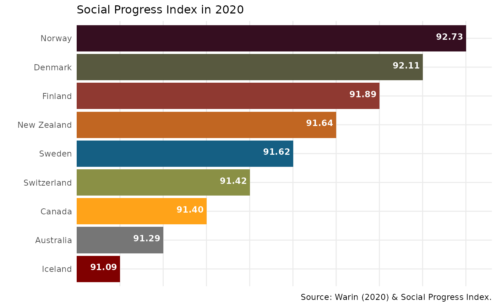
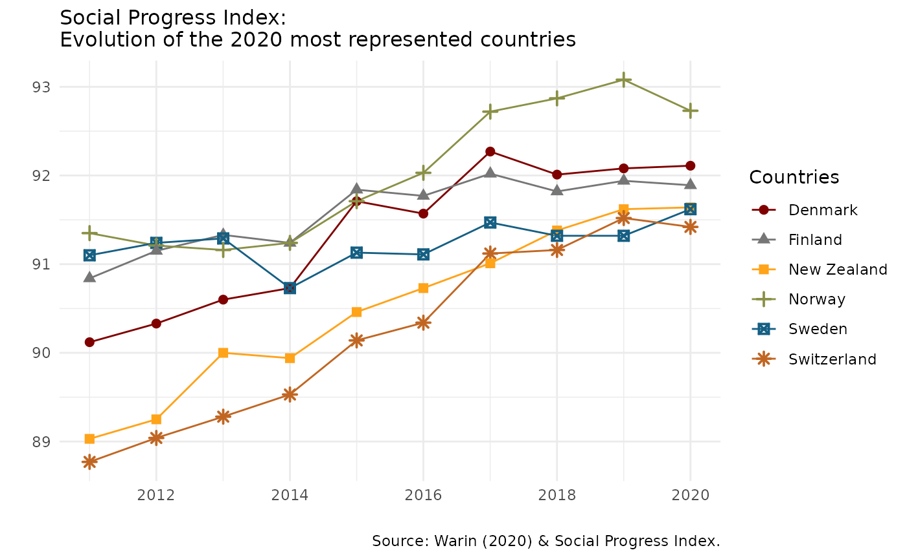

spiR is an R wrapper to easily access the Social Progress Index database. Published by the Social Progress Imperative, a global non profit based in Washington, DC, the index proposes a new perspective on social challenges and needed efforts to accelerate social progress in line with the Sustainable Development Goals. In this context, the goal of spiR is to allow an easy connection with R to the Social Progress Index in order to benefit from the “power of the crowds.”
At the Social Progress Imperative, they define “social progress as the capacity of a society to meet the basic human needs of its citizens, establish the building blocks that allow citizens and communities to enhance and sustain the quality of their lives, and create the conditions for all individuals to reach their full potential. Improving quality of life is a complex task and past efforts to measure progress simply haven’t created a sufficiently nuanced picture of what a successful society looks like. That’s why we created the Social Progress Index. Rather than emphasizing traditional measurements of success like income and investment, we measure 51 social and environmental indicators to create a clearer picture of what life is really like for everyday people. The index doesn’t measure people’s happiness or life satisfaction, focusing instead on actual life outcomes in areas from shelter and nutrition to rights and education. This exclusive focus on measurable outcomes makes the index a useful policy tool that tracks changes in society over time.”
The index measures the quality of life for 98% of the world’s population. In its current version, the R client provides access to global data. In further versions, this R client will include different geographical levels: states, regions, cities and sometimes communities.
Three overarching dimensions are (1) Basic Human Needs, (2) Foundations of Wellbeing, and (3) Opportunity. Within each dimension, there are four components that further divide the indicators into thematic categories. The index consists in 51 social and environmental variables, covering the years 2014 to 2019.
To read the methodology summary of the Social Progress Index [here]
To see a definition of the indicators, please visit this page. See below to have access through spiR to the whole list of indicators.
Users can recreate in R impactful dashboards and visualizations as the ones found on <www.socialprogress.org>:
First, install spiR:
install.packages("spiR")Next, call spiR to make sure everything is installed correctly.
A user needs to enter the ISO code of a country. To have access to this code, the following function provides this information.
spir_country() # A list of all countries will be produced
spir_country(country = "Canada") # The ISO code for Canada will be produced
spir_country("Canada") # The ISO code for Canada will be producedA user needs to enter the code of the desired indicator. To do so, the following function provides access to all the indicators of interest.
spir_indicator() # A list of all countries will be produced
spir_indicator(indicators = "mortality") # A list with all the variables including "mortlity" will be produced
spir_indicator("mortality") # A list with all the variables including "mortlity" will be producedOnce the user knows the ISO code and the indicator’s code, s.he can collect the data in a very easy way through this function:
spir_data(country = c("USA", "FRA"), year = c("2018", "2019"), indicators = "SPI") # It generates a data frame of the overall SPI indicator for the USA and France for the years 2018 and 2019
spir_data(country = c("USA", "FRA"), years = "2018", ) # It generates a data frame of all the indicators for the USA and France for the year 2018
spir_data("USA", "2019", c("SPI", "FOW")) # It generates a data frame of the SPI and FOW indicators for the USA in 2019
spir_data(, "2018", ) # It generates a data frame for all the countries and all the indicators for 2018
spir_data("USA", "2017", ) # It generates a data frame of all the indicators for the USA in 2017
spir_data("USA", , ) # It generates a data frame of all the indicators for all the years for the USA
spir_data(, , ) # It generates a data frame of the complete dataset
spir_data() # It generates a data frame of the complete datasetspir_visual fonction allows to create two types of visuals from the SPI data : barchart and linechart.
The first is a barchart of the top 9 countries for the chosen indicator and year.
library(spiR)
spir_visual(chart = "bar_1", indicator = "SPI", years = "2020")
The second is a linechart showing the evolution of the most represented countries over time for the chosen indicator.
spir_visual(chart = "line_1", indicator = "SPI", years = "2020")